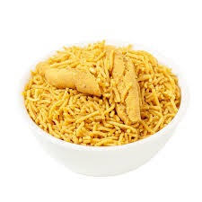

üç≤ Bikaneri Bhujia Recipe

Ingredients
- 1 cup besan (gram flour)
- 1/4 cup moong dal flour (optional, for authentic texture)
- 1/4 tsp black pepper (crushed)
- 1/4 tsp asafoetida (hing)
- 1/2 tsp red chili powder
- 1/2 tsp carom seeds (ajwain)
- Salt to taste
- Water (to knead dough)
- Oil (for deep frying)
Instructions
- In a bowl, mix besan, moong dal flour, spices, and salt.
- Add water gradually and knead into a soft, non-sticky dough.
- Heat oil in a kadhai on medium flame.
- Fill dough in a sev maker (fine hole plate) and press directly into hot oil.
- Fry until crisp and golden. Remove and drain on paper towel.
- Cool completely before storing in an airtight container.
Serve With
- Masala chai
- As a snack or topping for chaats
üßÇ Tip: Use freshly ground pepper and moong dal flour for authentic Bikaneri flavor.